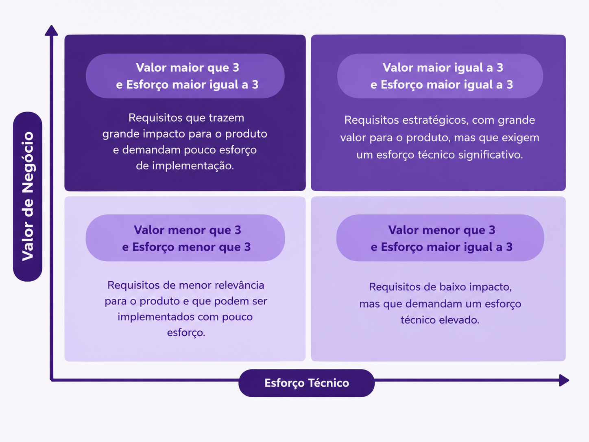

Critérios de Avaliação e Priorização¶
Para definir a prioridade dos requisitos do projeto Space Jam, foram utilizados três critérios de avaliação:
- Valor de Negócio (VN): representa a importância do requisito para os objetivos do produto e para as principais atividades dos usuários.
- Complexidade Técnica (CT): representa o nível de complexidade envolvido no desenvolvimento da funcionalidade.
- Esforço de Implementação (EI): representa a quantidade de trabalho e tempo necessários para implementar, testar e integrar o requisito.
A avaliação dos requisitos utiliza uma escala de 1 a 5, sendo que valores maiores representam maior valor de negócio, maior complexidade técnica ou maior esforço de implementação.
1. Valor de Negócio (VN)¶
O Valor de Negócio representa a importância de cada requisito para o funcionamento do Space Jam e para o atendimento dos objetivos do produto.
| Score | Classificação | Descrição | Exemplo |
|---|---|---|---|
| 5 | Crítico | É indispensável para o funcionamento básico do sistema ou para proteger informações importantes. | Controle de acesso aos dados e vídeos dos atletas. |
| 4 | Alto | É importante para o funcionamento das principais atividades do sistema. Sua ausência dificulta bastante o trabalho do treinador ou atleta. | Registrar e acompanhar os treinos dos atletas. |
| 3 | Médio | Facilita uma atividade importante, mas existem outras formas de realizá-la. | Filtrar exercícios por objetivo ou fundamento. |
| 2 | Baixo | Ajuda o usuário, mas não é necessária para realizar as principais atividades. | Exibir uma informação complementar sobre um exercício. |
| 1 | Muito baixo | Tem pouca importância e sua ausência praticamente não prejudica o sistema. | Uma pequena melhoria visual em uma tela. |
2. Complexidade Técnica (CT)¶
A Complexidade Técnica representa o nível de dificuldade técnica para desenvolver cada requisito, considerando a quantidade de informações envolvidas, regras do sistema e partes que precisam funcionar em conjunto.
| Score | Classificação | Descrição | Exemplo |
|---|---|---|---|
| 5 | Muito alta | Envolve muitas partes do sistema, regras complexas, algoritmos avançados ou exige cuidados especiais. | Controlar de forma detalhada quem pode acessar dados, vídeos e feedbacks de cada atleta. |
| 4 | Alta | Envolve várias partes do sistema e exige cuidados maiores para funcionar corretamente. | Enviar vídeos e relacioná-los a exercícios e atletas. |
| 3 | Média | Envolve várias informações ou algumas regras que precisam ser controladas. | Criar um planejamento de treino relacionando atleta, exercícios e objetivos. |
| 2 | Baixa | Funcionalidade simples, mas que envolve algumas informações relacionadas. | Cadastrar um exercício com nome, objetivo e descrição. |
| 1 | Muito baixa | Funcionalidade simples, com poucas regras e poucas informações envolvidas. | Exibir uma lista de exercícios. |
3. Esforço de Implementação (EI)¶
O Esforço de Implementação representa a quantidade de trabalho necessária para desenvolver, testar e integrar cada requisito ao sistema.
| Score | Classificação | Critério | Exemplo |
|---|---|---|---|
| 5 | Muito alto | Exige muito trabalho da equipe por mais de 5 dias e pode envolver várias etapas e partes do sistema. | Implementar todo o controle de acesso e proteção dos dados e vídeos dos atletas. |
| 4 | Alto | Exige de 3 a 5 dias de aplicação, testes e integração entre diferentes partes do sistema. | Implementar o envio, armazenamento e visualização de vídeos. |
| 3 | Médio | Exige alguns 2 dias de trabalho e envolve mais de uma parte do sistema. | Criar o cadastro e acompanhamento de um planejamento de treino. |
| 2 | Baixo | Exige pouco tempo e poucas alterações no sistema. | Criar um cadastro simples de exercício. |
| 1 | Muito baixo | Pode ser feito rapidamente por uma pessoa. | Alterar um texto ou exibir uma informação simples. |
4. Priorização dos Requisitos — MoSCoW¶
Após a avaliação dos requisitos, foi utilizada a técnica MoSCoW para definir quais funcionalidades possuem maior prioridade para o desenvolvimento.
A classificação foi definida a partir do Valor de Negócio:
| Valor de Negócio | MoSCoW | Significado |
|---|---|---|
| 4 a 5 | Must Have | Funcionalidades essenciais para o produto e que devem estar presentes. |
| 4 | Should Have | Funcionalidades importantes, mas que podem ser implementadas depois das funcionalidades essenciais. |
| 3 | Could Have | Funcionalidades desejáveis que podem ser implementadas caso haja tempo e recursos disponíveis. |
| 1 a 2 | Won't Have | Funcionalidades que não serão priorizadas para a versão atual do produto. |
Matriz MoSCoW¶
5. Matriz de Valor de Negócio × Esforço¶
Para auxiliar na priorização, também foi utilizada uma matriz relacionando o Valor de Negócio e o Esforço Técnico.
A matriz permite visualizar quais requisitos possuem maior importância para o produto em relação ao trabalho necessário para implementá-los.

Matriz 4×4¶
6. MVP¶
A partir das avaliações de Valor de Negócio, Complexidade Técnica, Esforço de Implementação e da priorização MoSCoW, foi definido o conjunto de requisitos que compõe o Mínimo Produto Viável (MVP) do Space Jam.
O MVP concentra as funcionalidades necessárias para disponibilizar uma primeira versão funcional do produto, permitindo que os principais objetivos sejam atendidos.
Os requisitos caracterizados com Must Have formam o núcleo essencial e funcional da aplicação para o lançamento do produto farão parte, obrigatoriamente, do MVP. A execeção que o time enxergou foi o requisito RF03502: Substituir vídeo enviado, que está classificado com Should Have, mas tem uma funcionalidade muito importante para a versão inicial.
Requisitos Funcionais¶
| MoSCoW | Código | Nome |
|---|---|---|
| Must Have | RF01101 | Cadastrar usuário |
| Must Have | RF01102 | Logar usuário |
| Must Have | RF01104 | Editar informações do perfil |
| Must Have | RF01107 | Trocar senha |
| Must Have | RF01208 | Consultar orientações e erros |
| Must Have | RF01209 | Consultar dificuldade |
| Must Have | RF01210 | Registrar dificuldade |
| Must Have | RF01211 | Editar dificuldade |
| Must Have | RF01212 | Editar status exercícios |
| Must Have | RF02301 | Cadastrar planejamento |
| Must Have | RF02302 | Editar planejamento |
| Must Have | RF02304 | Consultar histórico de planejamento |
| Must Have | RF02306 | Consultar status de treino |
| Must Have | RF02307 | Registrar adaptação de treino |
| Must Have | RF02408 | Cadastrar exercício |
| Must Have | RF02411 | Documentar erros e orientações |
| Must Have | RF02413 | Cadastrar descrição breve de vídeo base |
| Must Have | RF03501 | Enviar vídeo de execução |
| Should Have | RF03502 | Substituir vídeo enviado |
| Must Have | RF03601 | Registrar feedback |
| Must Have | RF03602 | Editar feedback |
| Must Have | RF04702 | Consultar atletas acompanhados |
| Must Have | RF04803 | Consultar próprios dados cadastrais |
| Must Have | RF04804 | Consultar próprios resultados de testes |
| Must Have | RF04805 | Consultar próprios vídeos enviados |
| Must Have | RF04806 | Consultar vídeos de atleta acompanhado |
| Must Have | RF04807 | Consultar feedback recebido |
| Must Have | RF04808 | Consultar próprio histórico de treinos |
| Must Have | RF04809 | Consultar próprios objetivos |
| Must Have | RF04810 | Consultar próprio planejamento de treinos |
| Must Have | RF04811 | Consultar perfil de atleta acompanhado |
| Must Have | RF04812 | Consultar resultados de testes de atleta acompanhado |
Requisitos Não Funcionais¶
RNFs obrigatórios para o MVP¶
| Classificação | Código | Nome |
|---|---|---|
| Obrigatório para o MVP | RNF01 | Responsividade Mobile |
| Obrigatório para o MVP | RNF02 | Arquitetura e Stack Tecnológica |
| Obrigatório para o MVP | RNF03 | Estabilidade em Navegadores Padrão |
| Obrigatório para o MVP | RNF05 | Proteção e Privacidade de Dados - Conformidade parcial com LGPD |
| Obrigatório para o MVP | RNF15 | Assistência e Validação no Preenchimento de Dados |
| Obrigatório para o MVP | RNF17 | Consentimento de Cookies |
| Obrigatório para o MVP | RNF18 | Persistência de Dados |
RNFs associados aos RFs do MVP¶
| Classificação | Código | Nome |
|---|---|---|
| Associado a RFs do MVP | RNF06 | Compatibilidade de Vídeo |
| Associado a RFs do MVP | RNF09 | Controle de Acesso Baseado em Funções (RBAC) |
| Associado a RFs do MVP | RNF10 | Isolamento Multi-inquilino de Dados |
| Associado a RFs do MVP | RNF11 | Desempenho no Carregamento do Histórico |
| Associado a RFs do MVP | RNF12 | Integridade na Catalogação de Exercícios |
| Associado a RFs do MVP | RNF16 | Gerenciamento Pré-Envio de Mídia |
7. Consolidação das avaliações¶
A média do esforço técnico de cada requisito foi obtida a partir das avaliações individuais realizadas pelos membros da equipe. Cada integrante atribuiu uma pontuação de 1 a 5, conforme a escala de Esforço de Implementação definida anteriormente. Em seguida, foi calculada a média das avaliações de cada requisito.
O mesmo procedimento foi aplicado ao Complexidade Técnica: cada membro avaliou os requisitos individualmente utilizando a escala de 1 a 5, também mencionada anteriormente, e as avaliações foram consolidadas por meio da média.
Cálculo do Esforço Técnico¶
O Esforço Técnico de cada requisito foi obtido a partir de duas avaliações realizadas pela equipe: Esforço de Implementação e Capacidade Técnica. Para cada requisito, foram calculadas as médias das avaliações dos integrantes em cada um desses critérios. Em seguida, as duas médias foram utilizadas para calcular uma média aritmética, resultando no valor final do Esforço Técnico.
O Esforço Técnico (ET) foi calculado a partir das médias obtidas nos critérios Esforço de Implementação e Capacidade Técnica, utilizando a média aritmética entre os dois critérios:
onde:
- \(M_E\) = média de Esforço de Implementação;
- \(M_{CT}\) = média de Capacidade Técnica.
Assim, para cada requisito, primeiro foram calculadas as médias individuais de Esforço de Implementação e Capacidade Técnica e, posteriormente, essas duas médias foram somadas e divididas por 2.
A tabela a seguir apresenta a consolidação das avaliações dos requisitos do projeto SpaceJam, reunindo os resultados obtidos para Valor de Negócio (VN) e Esforço Técnico. Essa consolidação permite visualizar, para cada requisito, sua relevância para o produto em conjunto com o esforço necessário para sua implementação, servindo como base para a definição das prioridades do projeto e para a aplicação da matriz de priorização.
Os requisitos funcionais e não funcionais são apresentados juntamente com suas respectivas rastreabilidades, nomes, descrições e médias das avaliações realizadas pela equipe. As médias permitem considerar diferentes avaliações sobre cada requisito, reduzindo a influência de uma avaliação individual na definição da prioridade.
| Rastreabilidade | Código | Nome | Descrição | Média de Esforço Técnico | Valor de Negócio |
|---|---|---|---|---|---|
| OE1 - CP1 | RF01101 | Cadastrar usuário | O sistema deve permitir que o usuário se cadastre no sistema, com informações: dados do usuário como nome, sobrenome, apelido, contato, altura, peso, envergadura, foto de perfil, senha, frequencia da realização da atividade física, objetivos, histórico de lesões, histórico de aptidão física e resultado de treinos | 2,33 | 5 |
| OE1 - CP1 | RF01102 | Logar usuário | O sistema deve permitir o login de todos os usuários devidamente cadastrados na aplicação, fazendo a requisição de apelido e senha | 1,67 | 5 |
| OE1 - CP1 | RF01103 | Deslogar usuário | O sistema deve permitir que o usuário possa deslogar do seu perfil | 1,17 | 2 |
| OE1 - CP1 | RF01104 | Editar informações do perfil | O sistema deve permitir que o atleta edite seus dados pessoais por exemplo nome, sobrenome, apelido, contato, altura, peso, envergadura e foto de perfil. Já as informações que envolvem análise do treinador como resultados dos treinos, objetivos, histórico de lesões, histórico de aptidão física, só poderão ser editadas pelo treinador | 2,25 | 5 |
| OE1 - CP1 | RF01105 | Excluir usuário | O sistema deve permitir que apenas o treinador exclua usuário que não são mais atletas do treinador | 2,00 | 2 |
| OE1 - CP1 | RF01106 | Criar senha aleatória | O sistema deve criar uma senha aleatória com letras, números e caracteres e mandar para o email vinculado ao usuário para primeiro acesso | 2,17 | 1 |
| OE1 - CP1 | RF01107 | Trocar senha | O sistema deve permitir o usuário de mudar senha, sendo após o primeiro acesso de quesito obrigatório, seguindo os critérios de aceite: mínimo 6 caracteres, mínimo um caracter especial e mínimo um número | 1,83 | 5 |
| OE1 - CP2 | RF01208 | Consultar orientações e erros | O sistema deve permitir que o treinador e o atleta consultem as orientações e erros dos exercícios associados ao atleta | 2,67 | 5 |
| OE1 - CP2 | RF01209 | Consultar dificuldade | O sistema deve permitir que o treinador consulte as dificuldades dos respectivos treinos orientados | 2,25 | 4 |
| OE1 - CP2 | RF01210 | Registrar dificuldade | O sistema deve permitir que o atleta registre o nível de dificuldade em uma escala de 1 a 5 que sentiu ao realizar o exercício | 2,50 | 5 |
| OE1 - CP2 | RF01211 | Editar dificuldade | O sistema deve permitir que o atleta modifique o nível de dificuldade da escala de 1 a 5 que sentiu ao realizar o exercício, enquanto o treino passado estiver disponível para o atleta | 2,75 | 5 |
| OE1 - CP2 | RF01212 | Editar status exercícios | O sistema deve permitir que o treinador modifique os status dos exercícios ("Concluído", "A fazer", "Corrigir") de acordo com a análise presencial do treinador ou vídeo enviado pelo atleta, quando houver | 2,17 | 4 |
| OE1 - CP2 | RF01213 | Adicionar testes | O sistema deve permitir que o treinador acrescente testes de aptidão física | 2,67 | 2 |
| OE1 - CP2 | RF01214 | Remover testes | O sistema deve permitir que o treinador exclua testes de aptidão física | 2,08 | 2 |
| OE2 - CP3 | RF02301 | Cadastrar planejamento | O sistema deve permitir que o treinador registre o planejamento de treinamento de cada atleta. | 2,67 | 5 |
| OE2 - CP3 | RF02302 | Editar planejamento | O sistema deve permitir que o treinador altere o planejamento de treinamento de cada atleta. | 2,75 | 5 |
| OE2 - CP3 | RF02303 | Associar treino a objetivo | O sistema deve permitir que o treinador associe cada treino planejado aos respectivos objetivos do atleta. | 2,42 | 3 |
| OE2 - CP3 | RF02304 | Consultar histórico de planejamento | O sistema deve permitir que o treinador consulte o histórico das alterações realizadas nos planejamentos de treinamento. | 1,83 | 4 |
| OE2 - CP3 | RF02305 | Comparar treinamentos | O sistema deve permitir que o treinador visualize um relatório comparativo entre os treinos planejados e os realizados por cada atleta, para que seja analisado os resultados do treinamento do atleta. | 3,08 | 4 |
| OE2 - CP3 | RF02306 | Consultar status de treino | O sistema deve permitir que o treinador identifique o estado de cada treino planejado, como não iniciado, em andamento ou concluído. | 2,50 | 5 |
| OE2 - CP3 | RF02307 | Registrar adaptação de treino | O sistema deve permitir que o treinador registre alterações realizadas em um treino planejado, podendo informar uma justificativa ou observação relacionada à alteração. | 2,67 | 5 |
| OE2 - CP4 | RF02408 | Cadastrar exercício | O sistema deve permitir que o treinador cadastre um exercício informando seu objetivo, fundamento e orientações para sua execução. | 1,75 | 5 |
| OE2 - CP4 | RF02409 | Filtrar exercícios por fundamento | O sistema deve permitir que o treinador filtre os exercícios da biblioteca de acordo com o fundamento esportivo associado. | 1,92 | 3 |
| OE2 - CP4 | RF02410 | Associar exercício a objetivo | O sistema deve permitir que o treinador associe um exercício a um ou mais objetivos de treinamento. | 3,08 | 2 |
| OE2 - CP4 | RF02411 | Documentar erros e orientações | O sistema deve permitir que o treinador associe erros comuns e respectivas orientações corretivas aos exercícios cadastrados. | 2,92 | 5 |
| OE2 - CP4 | RF02412 | Gerar thumbnail de vídeo base | O sistema deve permitir que o treinador faça o upload de uma imagem em miniatura (thumbnail) personalizada para o vídeo base do exercício ou, caso não seja enviada, deve gerar e exibir uma miniatura automaticamente a partir de um frame do arquivo de vídeo cadastrado. | 3,33 | 3 |
| OE2 - CP4 | RF02413 | Cadastrar descrição breve de vídeo base | O sistema deve disponibilizar um campo de texto resumido (descrição breve) associado a cada vídeo base da biblioteca de exercícios, permitindo que o treinador cadastre e edite essa informação e que atletas e treinadores a visualizem durante a consulta. | 2,00 | 5 |
| OE3 - CP5 | RF03501 | Enviar vídeo de execução | Permitir que o atleta grave ou selecione um vídeo do dispositivo e o envie vinculado a um exercício específico do seu treino | 3,75 | 4 |
| OE3 - CP5 | RF03502 | Substituir vídeo enviado | Permitir que o atleta substitua o vídeo vinculado a um exercício, desde que o treinador ainda não tenha registrado feedback sobre ele. | 3,75 | 5 |
| OE3 - CP5 | RF03503 | Excluir vídeo enviado | Permitir que o atleta exclua um vídeo já enviado, desde que o treinador ainda não tenha registrado feedback sobre ele. | 2,42 | 1 |
| OE3 - CP6 | RF03601 | Registrar feedback | Permitir que o treinador registre um feedback textual vinculado ao vídeo e ao exercício enviado por um atleta sob seu acompanhamento. | 2,67 | 5 |
| OE3 - CP6 | RF03602 | Editar feedback | Permitir que o treinador edite um feedback que ele mesmo registrou anteriormente. | 2,67 | 5 |
| OE3 - CP6 | RF03603 | Excluir feedback | Permitir que o treinador exclua um feedback que ele mesmo registrou anteriormente. | 2,17 | 1 |
| OE3 - CP6 | RF03604 | Notificar atleta sobre feedback | O sistema deve notificar o atleta quando um feedback for registrado ou editado pelo treinador para um vídeo enviado por ele. | 3,00 | 5 |
| OE4 - CP7 | RF04701 | Autenticar usuário | O sistema deve permitir que treinador e atleta acessem suas respectivas contas por meio de credenciais individuais, identificando o perfil do usuário autenticado. | 2,67 | — |
| OE4 - CP7 | RF04702 | Consultar atletas acompanhados | O sistema deve permitir que o treinador autenticado consulte a relação dos atletas sob seu acompanhamento. | 2,42 | 4 |
| OE4 - CP8 | RF04803 | Consultar próprios dados cadastrais | O sistema deve permitir que o atleta autenticado consulte seus próprios dados cadastrais, sem acessar os dados cadastrais de outro atleta. | 1,83 | 5 |
| OE4 - CP8 | RF04804 | Consultar próprios resultados de testes | O sistema deve permitir que o atleta autenticado consulte os resultados de testes associados à sua conta, sem acessar resultados de outros atletas. | 1,75 | 4 |
| OE4 - CP8 | RF04805 | Consultar próprios vídeos enviados | O sistema deve permitir que o atleta autenticado consulte os vídeos de execução que enviou, vinculados aos respectivos exercícios, sem acessar vídeos enviados por outros atletas. | 2,67 | 4 |
| OE4 - CP8 | RF04806 | Consultar vídeos de atleta acompanhado | O sistema deve permitir que o treinador autenticado consulte os vídeos de execução enviados pelos atletas sob seu acompanhamento, no contexto dos respectivos exercícios. | 2,75 | 5 |
| OE4 - CP8 | RF04807 | Consultar feedback recebido | O sistema deve permitir que o atleta autenticado consulte os feedbacks que o treinador registrou para seus vídeos e exercícios, sem acessar feedbacks destinados a outros atletas. | 2,67 | 5 |
| OE4 - CP8 | RF04808 | Consultar próprio histórico de treinos | O sistema deve permitir que o atleta autenticado consulte seu histórico de treinos, sem acessar o histórico de outros atletas. | 2,58 | 4 |
| OE4 - CP8 | RF04809 | Consultar próprios objetivos | O sistema deve permitir que o atleta autenticado consulte os objetivos registrados para ele, sem acessar os objetivos de outros atletas. | 2,42 | 4 |
| OE4 - CP8 | RF04810 | Consultar próprio planejamento de treinos | O sistema deve permitir que o atleta autenticado consulte os treinos planejados para ele, sem acessar o planejamento de outros atletas. | 2,33 | 4 |
| OE4 - CP8 | RF04811 | Consultar perfil de atleta acompanhado | O sistema deve permitir que o treinador autenticado consulte as informações de perfil dos atletas sob seu acompanhamento. | 2,42 | 5 |
| OE4 - CP8 | RF04812 | Consultar resultados de testes de atleta acompanhado | O sistema deve permitir que o treinador autenticado consulte os resultados de testes dos atletas sob seu acompanhamento. | 2,25 | 5 |
| Global | RNF01 | Responsividade Mobile | A interface deve adaptar-se a telas a partir de 360px, priorizando o uso em smartphones | 2,42 | — |
| Global | RNF02 | Arquitetura e Stack Tecnológica | O sistema deve ser desenvolvido utilizando React (v18+) com TypeScript no frontend, Python (3.11+) com Django / Django REST Framework no backend e PostgreSQL (v15+) como SGBD relacional. | 3,67 | — |
| Global | RNF03 | Estabilidade em Navegadores Padrão | O sistema deve operar sem falhas críticas (erros bloqueantes de navegação ou persistência) nas versões mais atuais dos navegadores ao longo do desenvolvimento: Chrome, Firefox, Edge, Safari e Opera. | 3,58 | — |
| Global | RNF04 | Acessibilidade Digital | A interface web deve garantir acessibilidade visual focada em daltonismo e baixa visão, aplicando paleta de cores com contraste mínimo de 4.5:1 (conforme WCAG 2.1 AA - Critério 1.4.3) e independência de cor como único meio de transmitir informação. | 3,30 | — |
| Global / CP8 | RNF05 | Proteção e Privacidade de Dados - Conformidade parcial com LGPD | O sistema deve garantir a privacidade e proteção dos dados dos usuários em conformidade parcial com a LGPD (Lei nº 13.709/2018), com foco nos artigos 5º, 14º, 18º e 46º. | 4,00 | — |
| CP5, CP6 | RNF06 | Compatibilidade de Vídeo | O sistema deve aceitar e processar submissões de ficheiros de vídeo nos formatos .mp4 e .mov. | 2,80 | 1 |
| CP5 | RNF07 | Feedback Visual de Upload | A aplicação web deve exibir um indicador visual de progresso dinâmico (com porcentagem de 1% a 99%) durante a submissão do vídeo, informando o estado em tempo real até ao término (100%). | 3,40 | — |
| CP6 | RNF08 | Interface de Feedback Anotado | A interface do treinador deve permitir a associação de notas e observações textuais diretamente vinculadas à linha do tempo dos vídeos enviados pelos atletas. | 3,60 | — |
| CP7 | RNF09 | Controle de Acesso Baseado em Funções (RBAC) | O sistema deve aplicar controle de acesso rígido (Role-Based Access Control), garantindo que endpoints e visões referentes ao perfil Treinador não sejam acessíveis por Atletas. | 3,60 | — |
| CP8 | RNF10 | Isolamento Multi-inquilino de Dados | O acesso aos vídeos, dados de histórico e feedbacks de um atleta deve ser restrito exclusivamente ao próprio atleta e aos treinadores devidamente vinculados a ele. | 3,58 | — |
| CP1, CP2 | RNF11 | Desempenho no Carregamento do Histórico | As telas de consulta de histórico, perfil e gráficos de evolução do atleta devem carregar completamente em até 5 segundos sob simulação de limitação de rede (throttling em perfil Fast 4G no DevTools dos navegadores homologados) e sob carga nominal de até 50 requisições simultâneas ao servidor. | 3,40 | — |
| CP4 | RNF12 | Integridade na Catalogação de Exercícios | A base da biblioteca de exercícios deve suportar consultas por filtros combinados (objetivos, fundamentos e materiais) sem inconsistência de índices. | 3,08 | — |
| CP5, CP8 | RNF13 | Resiliência e Armazenamento Protegido de Mídias | O upload dos vídeos enviados pelos atletas deve ser processado e persistido de forma isolada em armazenamento em nuvem com criptografia em repouso (AES-256). | 3,90 | — |
| CP5 | RNF14 | Restrição de Duração e Tamanho de Mídias | Os vídeos de execução enviados pelos atletas devem possuir duração máxima de 60 segundos e limite de tamanho de até 100 MB. | 3,10 | — |
| CP1, CP3 | RNF15 | Assistência e Validação no Preenchimento de Dados | O sistema deve aplicar máscaras de entrada em tempo real, destacar campos obrigatórios e validar formatos antes do envio do formulário, prevenindo erros de digitação. | 3,70 | — |
| CP5 | RNF16 | Gerenciamento Pré-Envio de Mídia | A interface deve limitar a seleção de arquivos a 1 único arquivo por vez no campo de upload, apresentando botão de remoção/substituição antes da confirmação do envio | 2,42 | — |
| Global / CP8 | RNF17 | Consentimento de Cookies | A aplicação web deve apresentar um aviso de consentimento de cookies no primeiro acesso, permitindo ao utilizador escolher entre "Aceitar Todos" ou "Apenas Essenciais" (LGPD Art. 7º e 8º). | 2,17 | — |
| Global | RNF18 | Persistência de Dados | O sistema deve garantir que as informações cadastradas e os vídeos dos treinadores permaneçam armazenadas após reinicializações ou atualizações do sistema. | 3,33 | — |